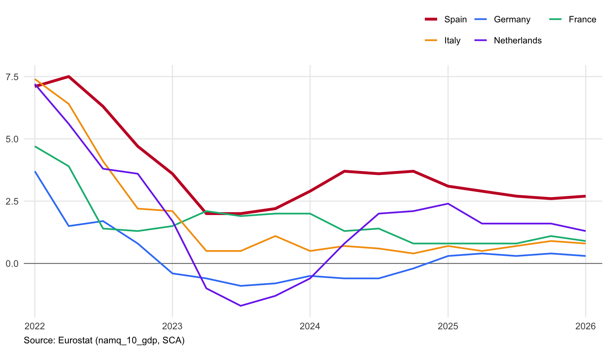
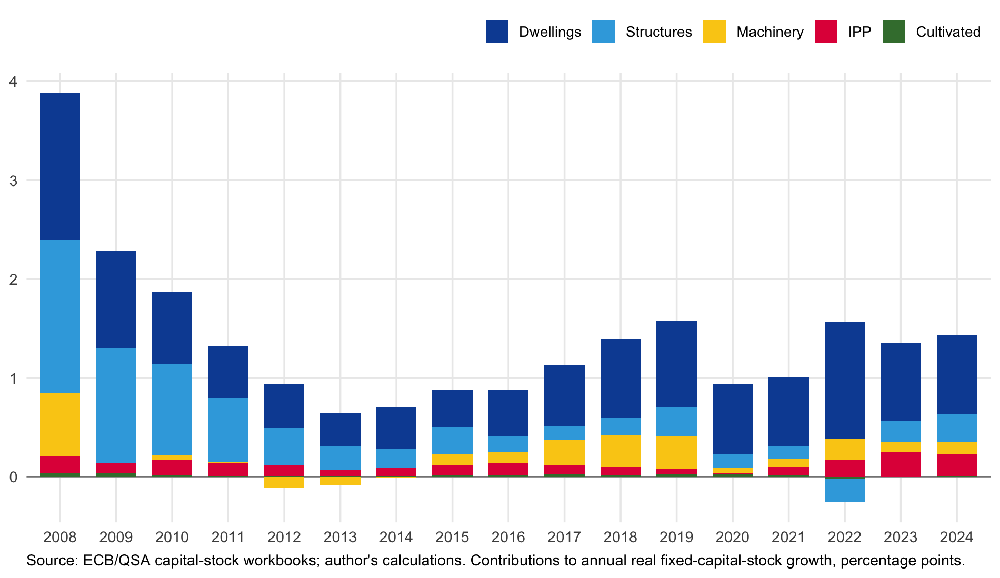
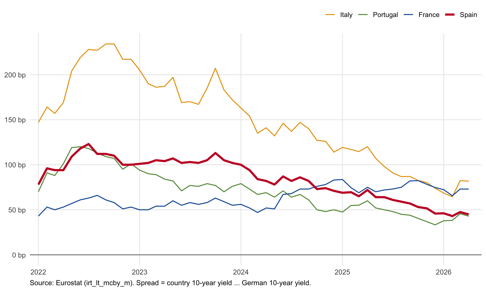
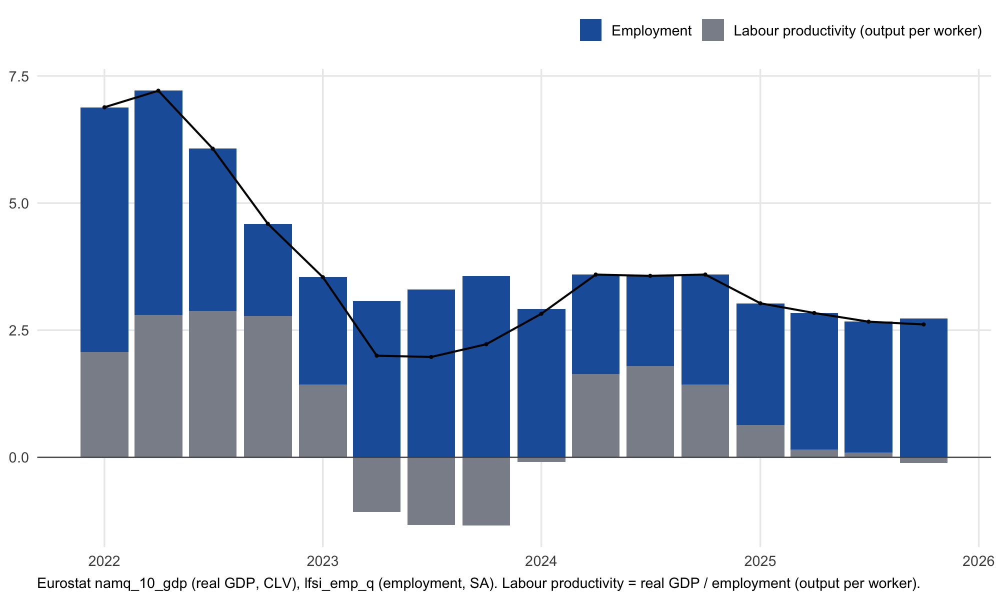
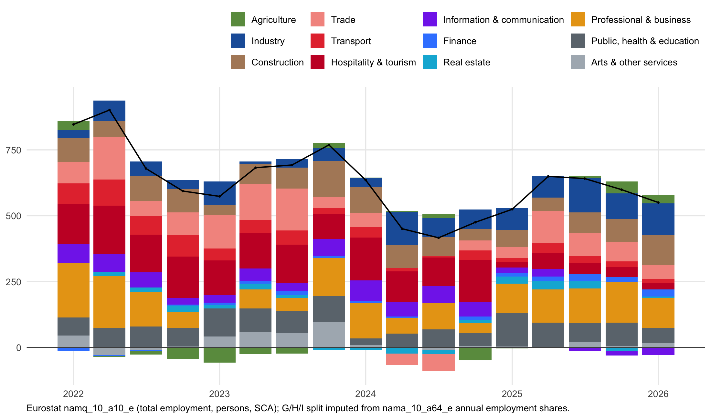
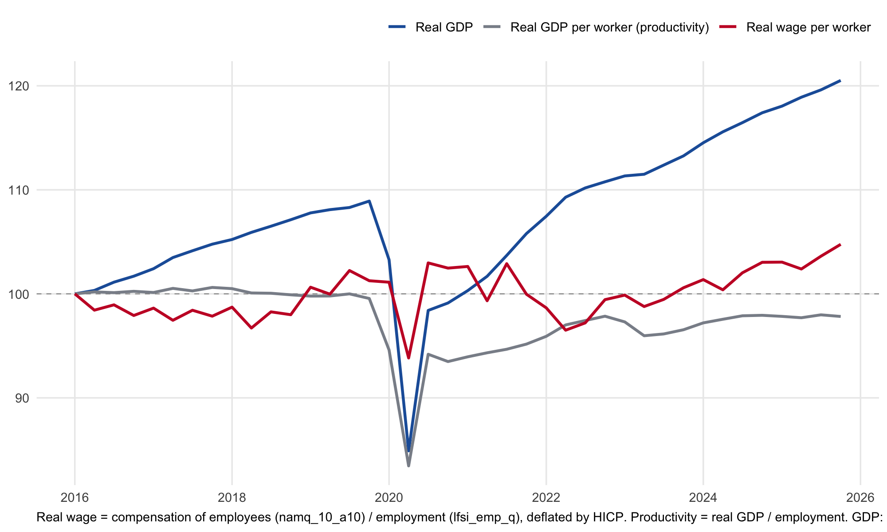
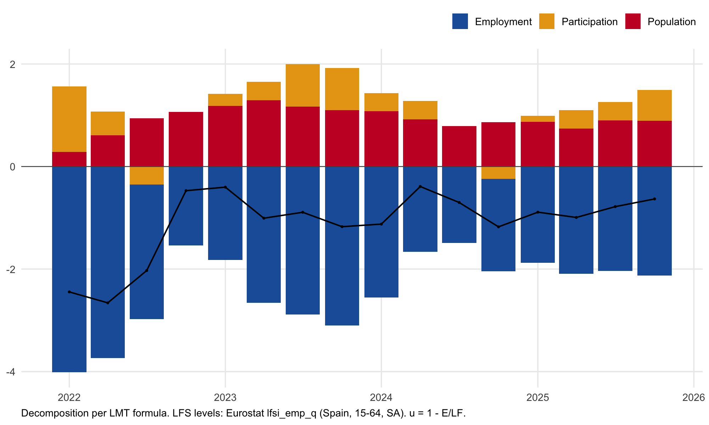
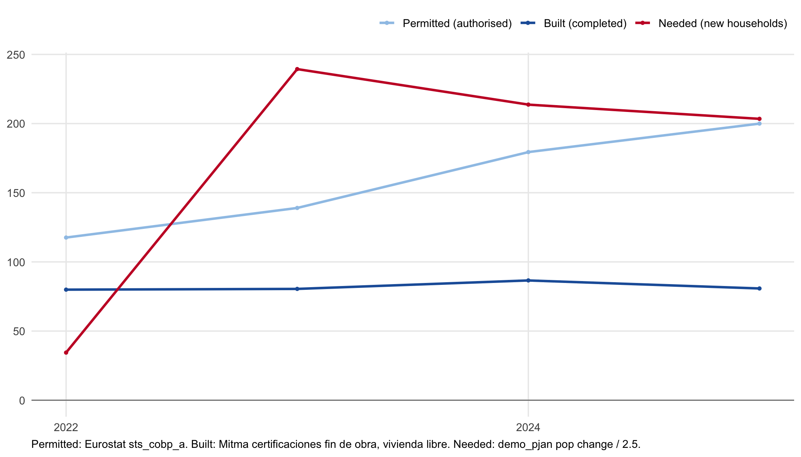

Spain must turn growth into higher wages and enough homes
Spain enjoys momentum. The economy is growing faster than its large euro-area peers, partly thanks to a large immigration surge that expanded the labour force. At the same time, unemployment has fallen to its lowest level since the global financial crisis... And La Roja won the men's football World Cup!
These are the headlines. The broader picture is less triumphant. This is a workers' boom more than a productivity boom. Spain's productivity remains weak, investment in productive capital is still too low, real wages are stagnant, and housing supply is falling far short of population growth.
It is a little like the World Cup final against Argentina. Spanish fans spent 106 nerve-racking minutes wondering whether overwhelming possession, pass accuracy and shots on target would ever be converted into a goal. It remains to be seen whether the Spanish economy can convert its headline growth into higher productivity, deeper capital, higher wages and enough homes.
Growth
The numbers justify the attention. Spain's expansion is not just a rebound from the Covid collapse of 2020. Real GDP growth averaged about 3.5% in 2024 and 2.8% in 2025, and was still running at 2.7% year on year in the latest 2026 data. Other large euro-area economies saw growth fade after the Covid rebound: Germany went into negative territory in 2024, contracting by 0.5%, and was growing by only 0.3% in the latest 2026 data, while France and Italy were at 0.9% and 0.8%.

But aggregate GDP flatters countries whose populations are growing. Real GDP per head gives a colder view. In 2025, Spain's real GDP per head was about EUR 26,850 in chain-linked 2015 euros, compared with EUR 31,800 for the EU27. Germany was near EUR 39,770, France EUR 36,000, Italy EUR 31,270, and the Netherlands EUR 46,600. Spain is growing fast, but it has not become a high-income northern European economy.
Investment
Strong growth has not yet led to much productive capital accumulation. Spain's real fixed capital stock rose by about 4.1% from 2021 to 2024, or only 1.4% a year. Dwellings accounted for roughly 68% of that increase. The non-dwelling productive capital stock rose by just 2.3%, or 0.8% a year. Within the total capital-stock increase, intellectual property contributed about 16% and machinery and equipment about 11%.

Finance is not the obvious constraint. Spain's spread over the Bund has steadily narrowed; by April 2026 it was around 45 basis points, below France's and far below Italy's. The IMF notes that strong growth has improved Spain's public finances and made the debt burden look more manageable.

So why is there so little investment in productive capital? The Draghi report helps frame the problem: weak scale-up, fragmented markets, regulatory burdens on smaller firms and too little investment in innovation. Spain shares part of that problem, with a services-heavy economy and many small firms. Its recent capital accumulation is also tilted towards dwellings rather than machinery, software and research. Without more capital per worker, a larger workforce will not translate into sustained productivity growth.
Labour
The labour-market improvement is real. Between 2022 and 2025, Spain's unemployment rate fell by 3.0 percentage points. France and Germany moved the other way: France from 7.4% to 8.0%, Germany from 3.1% to 3.9%. Spain's unemployment rate fell below 10% in 2025 for the first time since 2008. It remains high, but, as the Financial Times noted, it is now comparable to Finland.
The improvement is mostly on the employment margin. Between 2022 and 2025, Spanish real GDP rose about 12.1%, employment rose about 10.0%, and output per worker rose about 2.0%. Job creation did most of the work.

The jobs were not only in tourism. Since Covid, the largest net employment gains have come in public, health and education services, up about 574,000, and professional and business services, up about 503,000. Hospitality and tourism added about 120,000 jobs, with less momentum in recent years.

More jobs have not translated into much higher pay. Since 2016, real wages per worker are up only about 4.8%, while real GDP is up more than 20%. That is the wage counterpart of the productivity problem: if output per worker barely rises, employment growth can lift GDP without doing much for pay. The recent recovery in real compensation per worker mainly reverses the inflation shock; it does not change the secular trend of wage stagnation.

Immigration
Immigration accounted for around three-quarters of Spain's cumulative employment gains between 2022 and 2025. Native working-age population and average hours worked were falling, and immigration more than offset that drag. For an ageing society like Spain, where people aged 65 and over already make up about one-fifth of the population, this matters beyond the cycle: the IMF projects public pensions, health care and long-term care spending to rise by roughly 4.5 to 5.1 percentage points of GDP between 2025 and 2050.
What is striking is that the larger labour force was matched by even stronger job creation. Spain began 2022 with unemployment still above 13%. The decomposition below shows why unemployment nevertheless fell: population growth and higher participation added to the labour force, but employment grew faster, pushing the unemployment rate down.

Spain's economy is relatively successful at absorbing foreign citizens into the labour market. Eurostat's migrant-integration data show that Spain's foreign-citizen unemployment rate fell from 17.5% in 2022 to 12.5% in 2025, while the native-citizen rate fell from 11.3% to 7.8%. Foreign-citizen unemployment was still about 60% higher than native-citizen unemployment, but that gap was about 90% in France and roughly 200% in Germany. Spain did not create jobs only for natives while immigrants sat outside the labour market. Foreign-citizen unemployment fell sharply too.
Part of this reflects composition. Spain's immigration shock has been easier to absorb because many migrants come from Latin America, with shared language and closer cultural ties. That helps explain why Spain looks different from northern European cases where language and credential barriers are larger.
The politics also matter. Spain is moving against the prevailing European mood, as Le Monde puts it. The Sanchez government has approved an extraordinary regularisation process for migrants already living in Spain, with eligibility tied to prior residence, a clean criminal record and a time-limited application window. The logic behind it is not only moral but also economic: an ageing country needs workers, contributors and carers. For now, that openness is part of the growth model.
Housing
But as much as Spain's growth hinges on immigration, it also adds demand to an already undersupplied housing market. In 2025, permits were close to 200,000, but completions were only around 80,000. Implied household formation was roughly 200,000. On our narrow population-based measure, the cumulative shortfall since 2022 is about 360,000 homes when counted against completions. House prices are up roughly 35% since 2022. Buoyant demand is meeting inelastic supply. Rent controls and buyer subsidies can redistribute pressure at the margin but they do not build the missing homes. The Sanchez government has responded with a EUR 7 billion public housing plan for 2026-2030, but this is likely only to cover a fraction of the needed homes.

This is where Spain's recent expansion becomes politically fragile. Housing is the channel through which a successful migration-led expansion can come under pressure. Far-right Vox frames the housing crisis as an immigration problem, arguing for "many more houses" and "much less immigration". As long as housing supply does not respond, the pressure shows up in rents, house prices and anti-immigration politics.
Outlook
Housing is the immediate constraint. A migration-led expansion can remain politically sustainable only if homebuilding keeps up with the pace at which new households are forming, especially where the new jobs are concentrated. The public housing plan is a start, but the scale of the shortfall means planning, permitting and local supply constraints matter more than subsidies alone.
The harder task is income. Spain does not need growth to slow; it needs more of that growth to come from output per worker. That means more capital per worker, larger and more productive firms, and productivity gains that lead to higher real wages. Only then will the boom lead to convergence with Northern Europe. Otherwise, the workers' boom means a level shift, not a higher sustained growth path.
Sources: Eurostat (nama_10_pc, namq_10_gdp, lfsi_emp_q, une_rt_q, namq_10_a10, prc_hicp, prc_hpi_q, irt_lt_mcby_m and migrant-integration tables), INE migration data, INE housing completions, Mitma and Banco de España.
Additional sources: Eurostat/ECB national accounts capital-stock data with author's calculations, Draghi report materials, IMF Spain 2026 Article IV materials, OECD Employment Outlook 2026 country note for Spain, La Moncloa, Financial Times, Le Monde and Vox parliamentary materials.